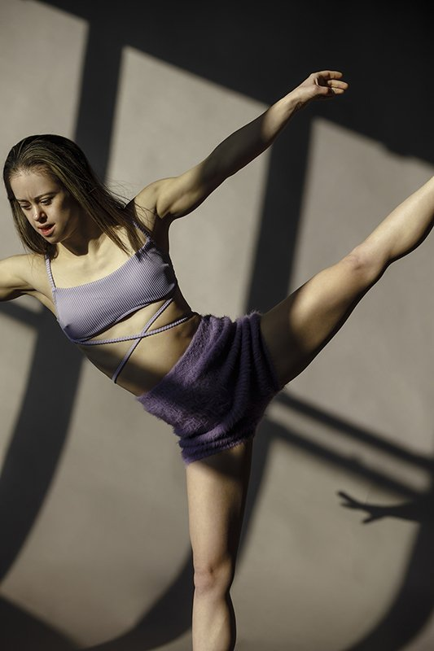

Jovem com Síndrome
de Down realiza seu sonho
Ela realizou seu sonho quando
A irlandesa Claudia Beatty, uma jovem atriz em ascensão com Síndrome de Down, conquistou um dos seus “sonhos de vida” quando atuou no filme “King frankie”, lançado em 2024. Sua mãe, Cherry Beatty, diz que acolheu oportunidades que dão a crianças como sua filha a chance de “atingir todo seu potencial”.
realizou seu sonho quando
A irlandesa Claudia Beatty, uma jovem atriz em ascensão
com Síndrome de Down, conquistou um dos
seus “sonhos de vida” quando atuou no filme “King frankie”, lançado em 2024. Sua mãe,
Cherry
Beatty, diz que acolheu oportunidades que dão a crianças como sua filha a chance de
“atingir
todo seu potencial”.
Sobre o que fala o filme?
O filme conta a história da redenção do taxista Frankie Burke, interpretado por Peter Coonan, que lida com traumas passados e com a recente morte de seu pai. Grainne Raffet, a personagem da irlandesa, cria um vínculo próximo e comovente com o taxista. Claudia conta que sua cena favorita foi no final, quando Grainne abraça Frankie: “ele ficou muito abalado por causa do pai, então eu o abracei para mostrar que me importava com ele.”Chelsea Werner e sua
jornada na ginastica
Historia Chelsea Werner
No mundo dos esportes é sempre comum ver alguém superar os seu limites, mas um grande exemplo de superar seus limites é de Chelsea Werner que mesmo com síndrome de down buscou aos seus 8 anos, juntamente de seus pais um local onde ela poderia treinar sua ginástica e esse lugar foi o Special Olympics organização internacional para apoiar pessoas deficientes Em 2006 a organização cortou o programa com a família de Chelsea então os pais de Chelsea criaram a Chelsea 's Quest uma ong para conseguir fundos para manter a garota no esporteONG inspirada na Chelsea

Em 2006 a organização cortou o programa com a família
de Chelsea então os pais de Chelsea criaram a Chelsea 's Quest
uma ong para conseguir fundos para manter a garota no esporte
de Chelsea então os pais de Chelsea criaram a Chelsea 's Quest
uma ong para conseguir fundos para manter a garota no esporte

Pratica diária
A Chelsea passou a praticar 16
horas por semana e os resultados vieram rápido. Em 2012, ela participou do
Campeonato Nacional de Ginástica da Special Olympics, conquistando.